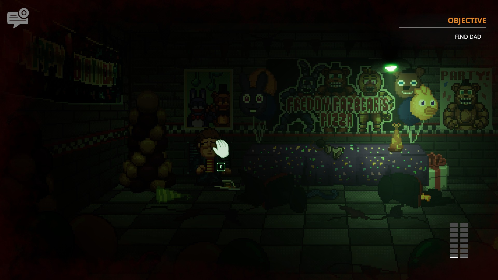
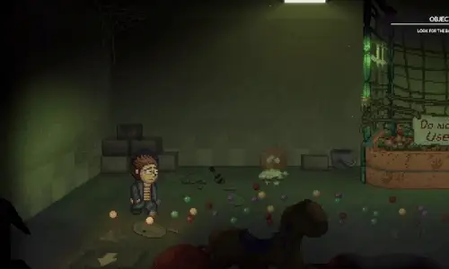
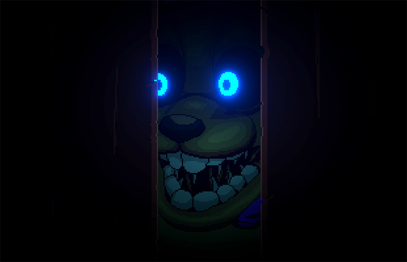
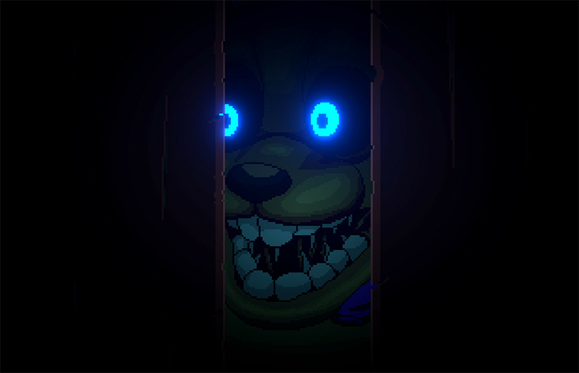

Five Nights at Freddy's Into The Pit é o décimo primeiro jogo de terror da franquia Five Nights at Freddy's feito por Mega Cat Studios.
Lançado em 7 de agosto de 2024, o jogo mais uma vez ganhou popularidade pela sua atmosfera assustadora e o novo estilo de sobrevivência.

O protagonista, Oswald, um garoto entediado com sua vida que era sempre igual, descobre uma piscina de bolinhas mágica em uma pizzaria abandonada que o transporta de volta no tempo.

Ao contrário dos outros títulos, Into The Pit tem a opção de escolher uma dificuldade, as suas diferentes escolhas durante o jogo podem levar a finais diferentes, também possui minigames que recompensam o jogador que os encontram todos.
  
